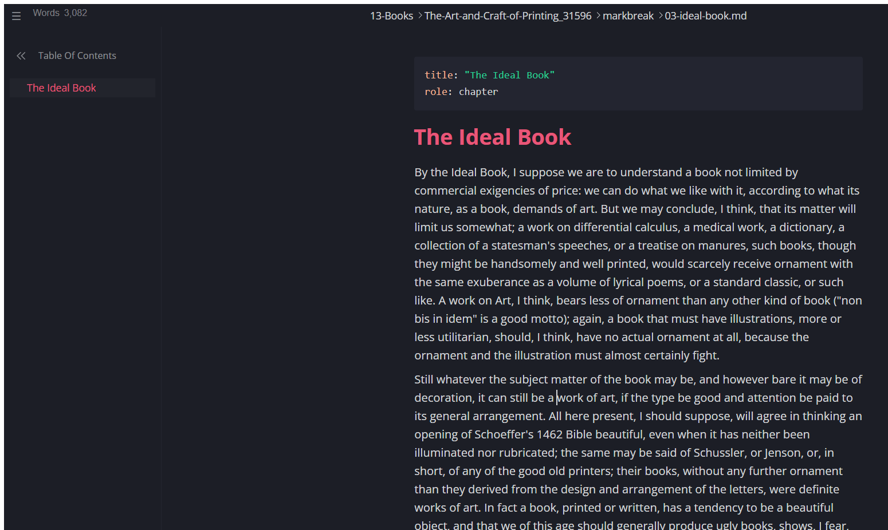

Write as you mean it.
Real-time WYSIWYG. Source mode when you want the marks naked. Themes, tables, math, diagrams, footnotes — the editor parity MarkText writers expect, on plain files with no account.
role: chapter lives in the YAML. The print job starts in the file.
Pages & Spreads — actually shipped.
Others advertise a book-like preview. MarkBreak Desktop opens folio Pages and facing Spreads so you can check the turn before export — the gap between drafting and print, closed in one window.

Roles & breaks stay in the file.
One role per leaf. //break advances the story; //break page forces a turn; odd and even when the side must be specific. Tables that calculate — Markdown or CSV spine leaves. Open rules on markbreak.com.
Focus when the sentence matters.
Highlight the line you are in. Fade the rest. Typewriter pacing when you want the page to follow the caret — quiet tools beside a dialect built for print.

Download MarkBreak
Windows, macOS, Linux. Open a blank page and write the first line — the path stays clear to Docx and print.